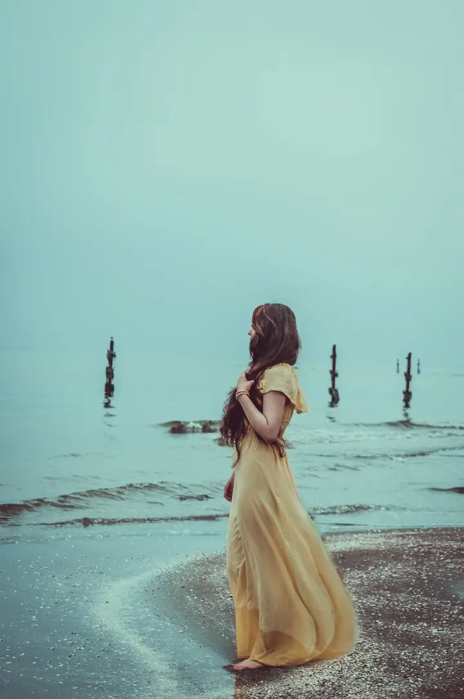

01 / 03
Brandová fotografie
Fotky, které vyprávějí příběh vašeho podnikání: způsob vaší práce, drobnosti, které vás odlišují, i vaši podnikatelskou vizi. Pomůžou vám odlišit se od konkurence a být tváří vlastní značky.
Zeptat se na termín→



Ukažte, kdo stojí za vaší značkou
Zeptat se na termín →(01) Ahoj
Jmenuji se Zuzana Šounová a jsem brandová a firemní fotografka z Neumětel . Fotím podnikatelky a podnikatele v Praze a ve středních Čechách tak, aby jejich fotky vyprávěly příběh jejich práce. Nebudu vás tlačit do krkolomných póz , spíš vytvořím bezpečný prostor, kde se snadno uvolníte.
181příspěvků s fotkami a příběhy
(02) Co fotím
01 / 03
Fotky, které vyprávějí příběh vašeho podnikání: způsob vaší práce, drobnosti, které vás odlišují, i vaši podnikatelskou vizi. Pomůžou vám odlišit se od konkurence a být tváří vlastní značky.
Zeptat se na termín→02 / 03
Portréty, které podpoří vaši profesionální image na webu, v marketingových materiálech a na sociálních sítích. Nejčastěji je fotím přímo u vás v kanceláři a okolí.
Zeptat se na termín→Dále nabízím
Tvoříte krásné věci? Vytvořím vám lákavé lifestylové fotografie vašich výrobků v akci, aby je klienti chtěli koupit.
↗(04) Postup
Od první zprávy po hotovou galerii.
Krok 1 z 4
Váháte, jestli je brandové focení pro vás to pravé? Při 15minutovém videohovoru zdarma si povíme o vašich potřebách a očekáváních.
Krok 2 z 4
U brandového focení vám pošlu brandový dotazník, který vám pomůže ujasnit si cíl podnikání i ideálního klienta. Společně pak vytvoříme moodboard na Pinterestu a probereme oblečení i rekvizity.
Krok 3 z 4
Hlavně v uvolněné atmosféře. Ráda vás navedu, abyste působili přirozeně, a obvykle po prvních deseti minutách tréma opadne.
Krok 4 z 4
Pošlu vám galerii, ze které sami nebo s mojí pomocí vyberete oblíbené fotky, a ty pak upravím. Nad hotovou galerií vám poradím, kde fotky nejlépe využít.
Můj foťák vás bude mít rád, i když focení nemusíte
(05) Za objektivem
K focení mě přivedla první láska. Tatínek mi tenkrát dal svůj analog, já začala fotit na film a okamžitě mě to chytlo. První zrcadlovku mi pak do cesty poslala vytoužená cesta na Island s mým milým. Od té doby se dívám na svět očima fotografky.
Původně jsem se chtěla věnovat rodinnému focení, ale rychle si mě našla brandová fotografie a já se našla v ní. Baví mě silné příběhy, se kterými klienti přicházejí, a nadšení, které jim září z očí, když mluví o svém podnikání. Hledat způsoby, jak tohle všechno dostat na fotky, mě baví ze všeho nejvíc.
Postupně se k brandu díky poptávce přidaly i business portréty a produktové focení. Fotím tak, abyste měli radost, když snímky uvidíte poprvé, a pak pokaždé znovu, když se jimi budete prezentovat svým srdcovým klientům.
Zuzana
Zuzana Šounová · Brandová a firemní fotografka
Nikdo není tak fotogenický, jak by chtěl. Umím najít balanc mezi přirozeností a tím dobře působit na fotce. Zaměřím se na vaše přednosti, a když se vám nelíbí tvář z jednoho úhlu, najdeme jiný.
Takový kousek, který rádi nosíte. Nepohodlné oblečení a impulzivní nákupy pár dní před focením nechte doma. Outfitu se spolu budeme věnovat ještě před focením a ráda vám poradím se střihy, barvami i doplňky.
Balíček Podle mých představ s 10 upravenými fotkami a 1–2 hodinami focení stojí 9 900 Kč. Balíček Buduji lovebrand s 30 fotkami, moodboardem, 2 hodinami focení a mini auditem osobní značky vyjde na 19 900 Kč. Business portréty a produktové focení naceňuji individuálně podle vašich potřeb.
To se stává často. Další fotky si jednoduše připlatíte za kus, podle toho, co přesně potřebujete.
(07) Kontakt
Napište pár vět o tom, co si představujete, a termín, který se vám hodí.
chcivyfotit@zuzanasounova.cz